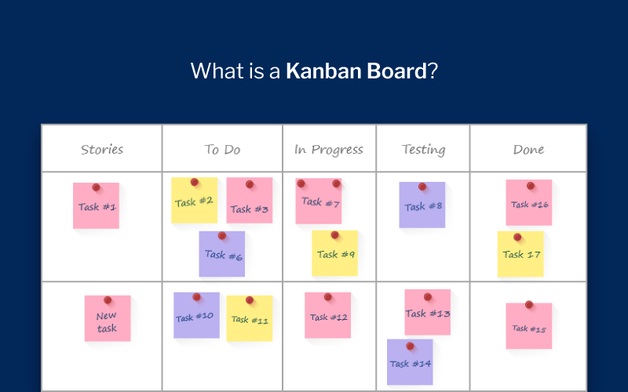

DAILY STAND-UP

- ¿QUE ES?
- Reunion diaria
- OBJETIVOS
- Informe de actualializacion del progreso del sprint
- Informar de posibles atascos
- Informar y definir el trabajo diario
- QUENES?
- Los miembros del equipo incluyendo al Scrum Master
- Opcionalmente el cliente "no se recomienda"
- COMO?
- Eleccion del momento
- Todos los miembros del proyecto participan
- Duracion aproximadamente 10 o 15 minutos
- Definir el proposito de la reunion
- Programar reuniones secundarias